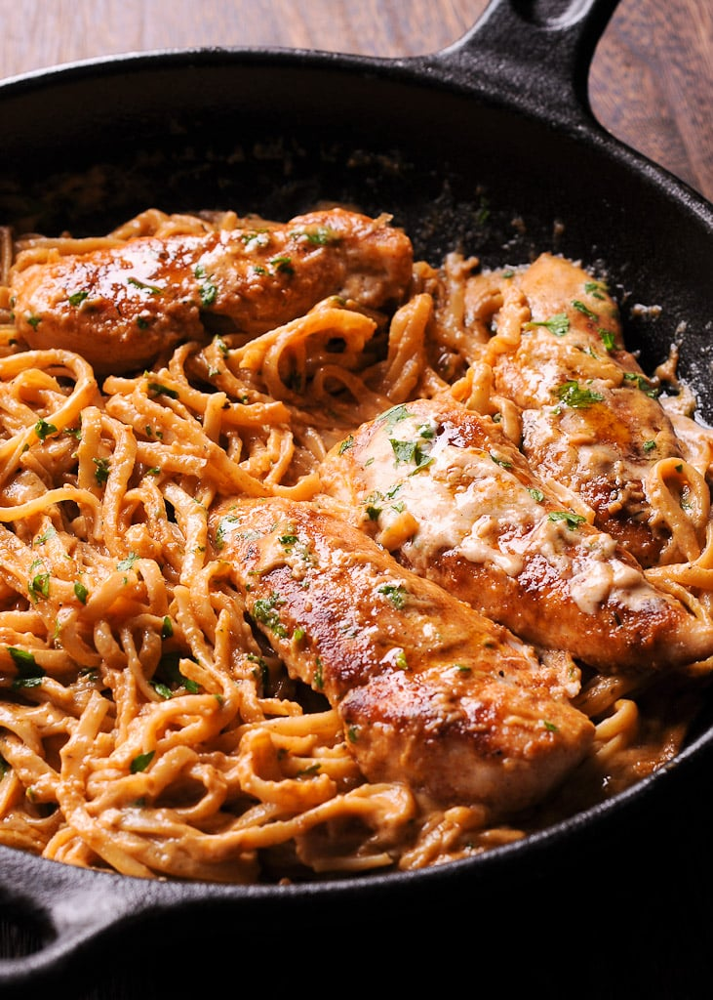

Home
Spicy Chicken Pasta
In this recipe you will learn how to cook a delicious chicken pasta dish in under 20 minutes.
For this recipe you will need the following ingredients:
- Fresh penne pasta
- 2tsp of olive oil
- Two whole chicken breats
- One tin of chopped tomatoes
- One onion
- Two red chilies
- 50g tomato puree
- 200g closed cup mushrooms
- One stick of celery
- One red pepper
- Salt & pepper
- Start by adding two tsp of olive oil to a pan. Slice the chicken and throw in. Cook on a medium heat until golden on the outside.
- Dice two chilies, one onion, 200g of mushrooms and one stick of celery.
- Empty a tin of chopped tomatoes into a saucepan. Stir in 50g of tomato puree. Simmer on a medium heat for five minutes.
- Add the diced veg, stir and leave to simmer for a further 10 minutes.
- Whilst the sauce is cooking, bring a second saucepan of water to the boil and cook the fresh penne for 3 minutes.
- Using a stick blender, blend the tomato sauce until smooth.
- mix the drained pasta and sauce together. Serve with sliced chicken on top. Season with salt and pepper to taste and enjoy.
